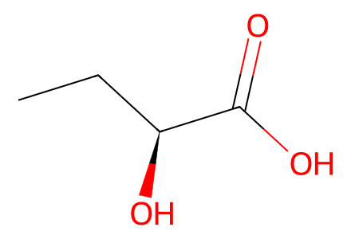
CC[C@H](O)C(=O)O41 molecular records; 35 preparation events; 9 selected paths. Forward preparative networks of Schemes 3-5 plus named isolated byproduct 47: both convergent fragments, successful targets, rejected regioselective branches and recoverable byproducts. Earlier literature Schemes 1/2 and unidentified decomposition products excluded. Screening repeats with the same molecular endpoints are represented by selected source conditions, not fabricated additional steps. SI unavailable locally; main experimental data provide source validation.
完整 JSON · 逐步 CSV · 路线序列 · SDF · HRMS 核对
| 事件 | 分子连接 | 报告产率 | Canonical reaction SMILES |
|---|---|---|---|
| E01 | hydroxybutyric-acid → 22 | 22: 92% | CC[C@H](O)C(=O)O>>CC[C@H](OCOC)C(=O)O |
| E02 | 22 + 23 → 24 | 24: 85% | CCOC(=O)CC(=O)[O-].CC[C@H](OCOC)C(=O)O.[K+]>>CCOC(=O)CC(=O)[C@H](CC)OCOC |
| E03 | 24 → 20 | 20: 84% | CCOC(=O)CC(=O)[C@H](CC)OCOC>>CCOC(=O)/C=C(\OS(=O)(=O)C(F)(F)F)[C@H](CC)OCOC |
| E04 | trimethoxybenzene + butanoyl-chloride → 25a | not reported | CCCC(=O)Cl.COc1cc(OC)cc(OC)c1>>CCCC(=O)c1c(OC)cc(OC)cc1OC |
| E05 | 25a → 25b | 25b: 89% | CCCC(=O)c1c(OC)cc(OC)cc1OC>>CCCC(=O)c1c(O)cc(OC)cc1OC |
| E06 | 25b → 26a | 26a: 79% | CCCC(=O)c1c(O)cc(OC)cc1OC>>CCCC(=O)c1c(OC)cc(OC)c(Br)c1O |
| E07 | 25b → 26b | 26b: 98% | CCCC(=O)c1c(O)cc(OC)cc1OC>>CCCC(=O)c1c(OC)cc(OC)c(I)c1O |
| E08 | 26a → 27a | 27a: 99% | CCCC(=O)c1c(OC)cc(OC)c(Br)c1O>>CCCC(=O)c1c(OC)cc(OC)c(Br)c1OCOC |
| E09 | 26b → 27b | 27b: 97% | CCCC(=O)c1c(OC)cc(OC)c(I)c1O>>CCCC(=O)c1c(OC)cc(OC)c(I)c1OCOC |
| E10 | 27b → 21 + 28 | 21: 79%; 28: 15% | CCCC(=O)c1c(OC)cc(OC)c(I)c1OCOC>>CCCC(=O)c1c(OC)cc(OC)c(B2OC(C)(C)C(C)(C)O2)c1OCOC.CCCC(=O)c1c(OC)cc(OC)cc1OCOC |
| E11 | 27a → 21 + 28 | 21: 13%; 28: 50% | CCCC(=O)c1c(OC)cc(OC)c(Br)c1OCOC>>CCCC(=O)c1c(OC)cc(OC)c(B2OC(C)(C)C(C)(C)O2)c1OCOC.CCCC(=O)c1c(OC)cc(OC)cc1OCOC |
| E12 | 28 → 25b | 25b: 97% | CCCC(=O)c1c(OC)cc(OC)cc1OCOC>>CCCC(=O)c1c(O)cc(OC)cc1OC |
| E13 | 20 + 21 → 29 | 29: 75% | CCCC(=O)c1c(OC)cc(OC)c(B2OC(C)(C)C(C)(C)O2)c1OCOC.CCOC(=O)/C=C(\OS(=O)(=O)C(F)(F)F)[C@H](CC)OCOC>>CCCC(=O)c1c(OC)cc(OC)c2c([C@@H](O)CC)cc(=O)oc12 |
| E14 | 29 → 30 | 30: 93% | CCCC(=O)c1c(OC)cc(OC)c2c([C@@H](O)CC)cc(=O)oc12>>CCCC(=O)c1c(OC)cc(OC)c2c([C@H](CC)OCOC)cc(=O)oc12 |
| E15 | 30 → 31a | 31a: 89% | CCCC(=O)c1c(OC)cc(OC)c2c([C@H](CC)OCOC)cc(=O)oc12>>CC[C@H](OCOC)c1cc(=O)oc2c(I)c(OC)cc(OC)c12 |
| E16 | 30 → 31b | 31b: 67% | CCCC(=O)c1c(OC)cc(OC)c2c([C@H](CC)OCOC)cc(=O)oc12>>CC[C@H](OCOC)c1cc(=O)oc2c(Br)c(OC)cc(OC)c12 |
| E17 | 29 → 32 | 32: 97% | CCCC(=O)c1c(OC)cc(OC)c2c([C@@H](O)CC)cc(=O)oc12>>CCCC(=O)c1c(O)cc(OC)c2c([C@@H](O)CC)cc(=O)oc12 |
| E18 | 32 → 33 | 33: 94% | CCCC(=O)c1c(O)cc(OC)c2c([C@@H](O)CC)cc(=O)oc12>>CCCC(=O)c1c(O)cc(OC)c2c([C@H](CC)OCOC)cc(=O)oc12 |
| E19 | 33 → 34a | 34a: 90% | CCCC(=O)c1c(O)cc(OC)c2c([C@H](CC)OCOC)cc(=O)oc12>>CCCC(=O)c1c(O)c(Br)c(OC)c2c([C@H](CC)OCOC)cc(=O)oc12 |
| E20 | 33 → 34a + 34b | 34a: 26%; 34b: 22% | CCCC(=O)c1c(O)cc(OC)c2c([C@H](CC)OCOC)cc(=O)oc12>>CCCC(=O)c1c(O)c(Br)c(OC)c2c([C@H](CC)OCOC)c(Br)c(=O)oc12.CCCC(=O)c1c(O)c(Br)c(OC)c2c([C@H](CC)OCOC)cc(=O)oc12 |
| E21 | 34a → 35 | 35: 85% | CCCC(=O)c1c(O)c(Br)c(OC)c2c([C@H](CC)OCOC)cc(=O)oc12>>CCCC(=O)c1c(OC)c(Br)c(OC)c2c([C@H](CC)OCOC)cc(=O)oc12 |
| E22 | 35 + geranyl-stannane → 36 + 30 | 36: 18%; 30: 52% | CCCC(=O)c1c(OC)c(Br)c(OC)c2c([C@H](CC)OCOC)cc(=O)oc12.CCC[CH2][Sn]([CH2]/C=C(\C)CCC=C(C)C)([CH2]CCC)[CH2]CCC>>CCCC(=O)c1c(OC)c(C/C=C(\C)CCC=C(C)C)c(OC)c2c([C@H](CC)OCOC)cc(=O)oc12.CCCC(=O)c1c(OC)cc(OC)c2c([C@H](CC)OCOC)cc(=O)oc12 |
| E23 | 29 → 37 | 37: 82% | CCCC(=O)c1c(OC)cc(OC)c2c([C@@H](O)CC)cc(=O)oc12>>CCCC(=O)c1c(OC)cc(OC)c2c([C@H](CC)OC(=O)C(C)(C)C)cc(=O)oc12 |
| E24 | 37 → 38 | 38: 87% | CCCC(=O)c1c(OC)cc(OC)c2c([C@H](CC)OC(=O)C(C)(C)C)cc(=O)oc12>>CCCC(=O)c1c(O)cc(OC)c2c([C@H](CC)OC(=O)C(C)(C)C)cc(=O)oc12 |
| E25 | 38 + geranyl-bromide → 39 | 39: 97% | CC(C)=CCC/C(C)=C/CBr.CCCC(=O)c1c(O)cc(OC)c2c([C@H](CC)OC(=O)C(C)(C)C)cc(=O)oc12>>CCCC(=O)c1c(OC/C=C(\C)CCC=C(C)C)cc(OC)c2c([C@H](CC)OC(=O)C(C)(C)C)cc(=O)oc12 |
| E26 | 39 → 40 + 38 | 40: 18%; 38: 67% | CCCC(=O)c1c(OC/C=C(\C)CCC=C(C)C)cc(OC)c2c([C@H](CC)OC(=O)C(C)(C)C)cc(=O)oc12>>CCCC(=O)c1c(O)c(C/C=C(\C)CCC=C(C)C)c(OC)c2c([C@H](CC)OC(=O)C(C)(C)C)cc(=O)oc12.CCCC(=O)c1c(O)cc(OC)c2c([C@H](CC)OC(=O)C(C)(C)C)cc(=O)oc12 |
| E27 | 32 → 41 | 41: 51% | CCCC(=O)c1c(O)cc(OC)c2c([C@@H](O)CC)cc(=O)oc12>>CCCC(=O)c1c(O)cc(O)c2c([C@@H](O)CC)cc(=O)oc12 |
| E28 | 41 → 42a | 42a: 90% | CCCC(=O)c1c(O)cc(O)c2c([C@@H](O)CC)cc(=O)oc12>>CCCC(=O)c1c(O)cc(OCOCC[Si](C)(C)C)c2c([C@@H](O)CC)cc(=O)oc12 |
| E29 | 41 → 42a + 42b | 42a: 68%; 42b: 30% | CCCC(=O)c1c(O)cc(O)c2c([C@@H](O)CC)cc(=O)oc12>>CCCC(=O)c1c(O)cc(OCOCC[Si](C)(C)C)c2c([C@@H](O)CC)cc(=O)oc12.CCCC(=O)c1c(OCOCC[Si](C)(C)C)cc(OCOCC[Si](C)(C)C)c2c([C@@H](O)CC)cc(=O)oc12 |
| E30 | 42a + geranyl-bromide → 43 | 43: 93% | CC(C)=CCC/C(C)=C/CBr.CCCC(=O)c1c(O)cc(OCOCC[Si](C)(C)C)c2c([C@@H](O)CC)cc(=O)oc12>>CCCC(=O)c1c(OC/C=C(\C)CCC=C(C)C)cc(OCOCC[Si](C)(C)C)c2c([C@@H](O)CC)cc(=O)oc12 |
| E31 | 43 → 44 | 44: 79% | CCCC(=O)c1c(OC/C=C(\C)CCC=C(C)C)cc(OCOCC[Si](C)(C)C)c2c([C@@H](O)CC)cc(=O)oc12>>CCCC(=O)c1c(OC/C=C(\C)CCC=C(C)C)cc(O)c2c([C@@H](O)CC)cc(=O)oc12 |
| E32 | 44 → 1 + 41 | 1: 18%; 41: 74% | CCCC(=O)c1c(OC/C=C(\C)CCC=C(C)C)cc(O)c2c([C@@H](O)CC)cc(=O)oc12>>CCCC(=O)c1c(O)c(C/C=C(\C)CCC=C(C)C)c(O)c2c([C@@H](O)CC)cc(=O)oc12.CCCC(=O)c1c(O)cc(O)c2c([C@@H](O)CC)cc(=O)oc12 |
| E33 | 43 → 45 | 45: 87% | CCCC(=O)c1c(OC/C=C(\C)CCC=C(C)C)cc(OCOCC[Si](C)(C)C)c2c([C@@H](O)CC)cc(=O)oc12>>CCCC(=O)c1c(OC/C=C(\C)CCC=C(C)C)cc(OCOCC[Si](C)(C)C)c2c([C@H](CC)OC(C)=O)cc(=O)oc12 |
| E34 | 45 → 46 | 46: 82% | CCCC(=O)c1c(OC/C=C(\C)CCC=C(C)C)cc(OCOCC[Si](C)(C)C)c2c([C@H](CC)OC(C)=O)cc(=O)oc12>>CCCC(=O)c1c(OC/C=C(\C)CCC=C(C)C)cc(O)c2c([C@H](CC)OC(C)=O)cc(=O)oc12 |
| E35 | 46 → 2 + 47 | 2: 16%; 47: 70% | CCCC(=O)c1c(OC/C=C(\C)CCC=C(C)C)cc(O)c2c([C@H](CC)OC(C)=O)cc(=O)oc12>>CCCC(=O)c1c(O)c(C/C=C(\C)CCC=C(C)C)c(O)c2c([C@H](CC)OC(C)=O)cc(=O)oc12.CCCC(=O)c1c(O)cc(O)c2c([C@H](CC)OC(C)=O)cc(=O)oc12 |

CC[C@H](O)C(=O)O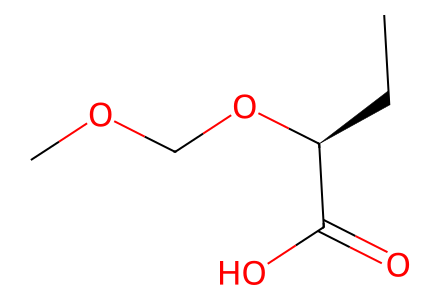
CC[C@H](OCOC)C(=O)O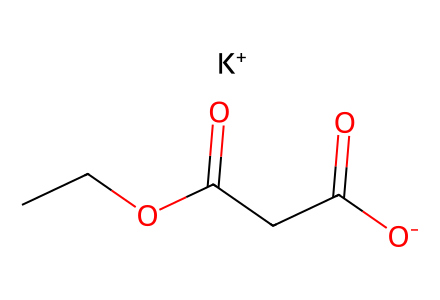
CCOC(=O)CC(=O)[O-].[K+]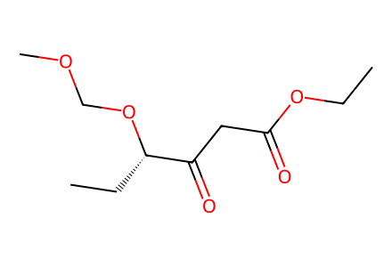
CCOC(=O)CC(=O)[C@H](CC)OCOC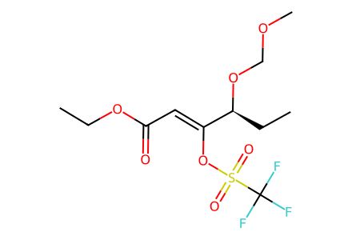
CCOC(=O)/C=C(\OS(=O)(=O)C(F)(F)F)[C@H](CC)OCOC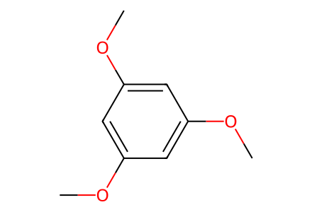
COc1cc(OC)cc(OC)c1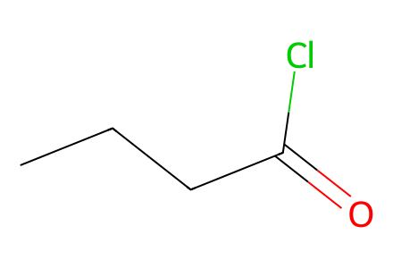
CCCC(=O)Cl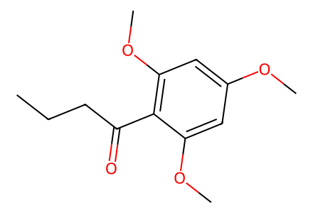
CCCC(=O)c1c(OC)cc(OC)cc1OC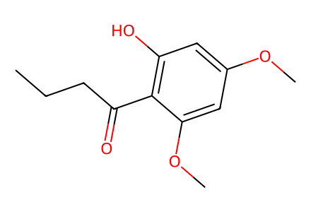
CCCC(=O)c1c(O)cc(OC)cc1OC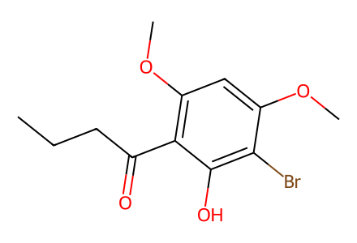
CCCC(=O)c1c(OC)cc(OC)c(Br)c1O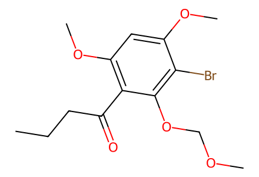
CCCC(=O)c1c(OC)cc(OC)c(Br)c1OCOC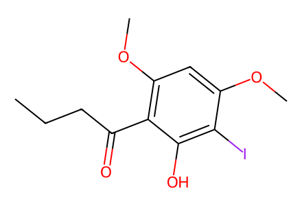
CCCC(=O)c1c(OC)cc(OC)c(I)c1O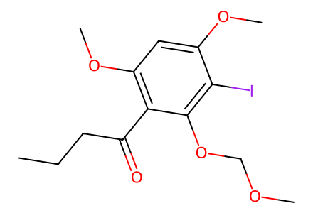
CCCC(=O)c1c(OC)cc(OC)c(I)c1OCOC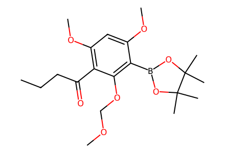
CCCC(=O)c1c(OC)cc(OC)c(B2OC(C)(C)C(C)(C)O2)c1OCOC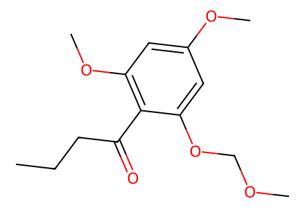
CCCC(=O)c1c(OC)cc(OC)cc1OCOC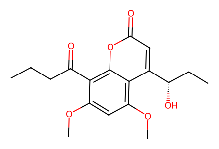
CCCC(=O)c1c(OC)cc(OC)c2c([C@@H](O)CC)cc(=O)oc12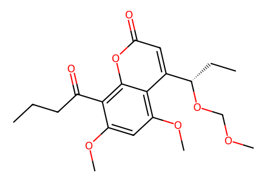
CCCC(=O)c1c(OC)cc(OC)c2c([C@H](CC)OCOC)cc(=O)oc12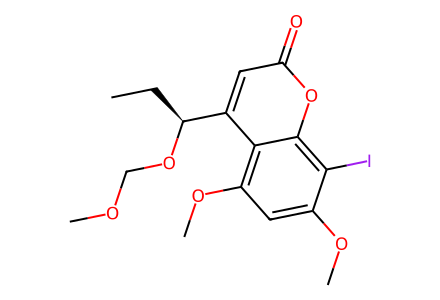
CC[C@H](OCOC)c1cc(=O)oc2c(I)c(OC)cc(OC)c12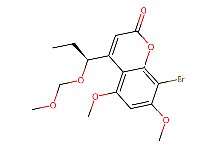
CC[C@H](OCOC)c1cc(=O)oc2c(Br)c(OC)cc(OC)c12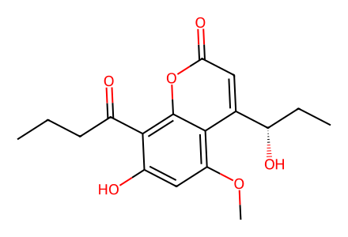
CCCC(=O)c1c(O)cc(OC)c2c([C@@H](O)CC)cc(=O)oc12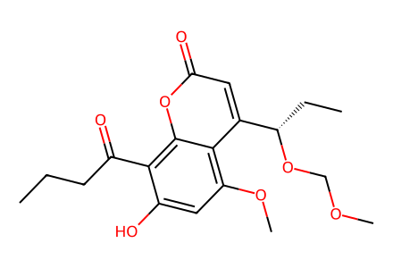
CCCC(=O)c1c(O)cc(OC)c2c([C@H](CC)OCOC)cc(=O)oc12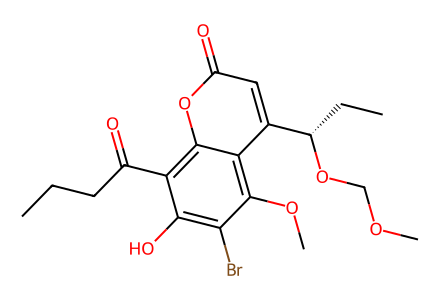
CCCC(=O)c1c(O)c(Br)c(OC)c2c([C@H](CC)OCOC)cc(=O)oc12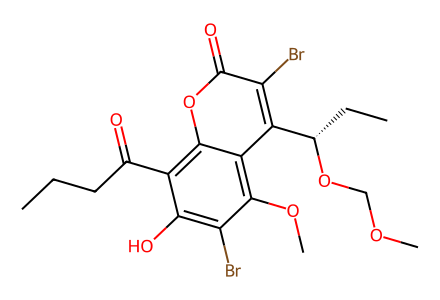
CCCC(=O)c1c(O)c(Br)c(OC)c2c([C@H](CC)OCOC)c(Br)c(=O)oc12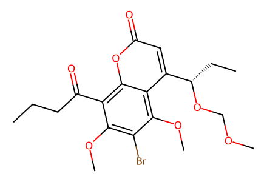
CCCC(=O)c1c(OC)c(Br)c(OC)c2c([C@H](CC)OCOC)cc(=O)oc12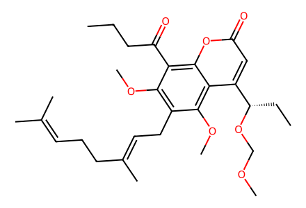
CCCC(=O)c1c(OC)c(C/C=C(\C)CCC=C(C)C)c(OC)c2c([C@H](CC)OCOC)cc(=O)oc12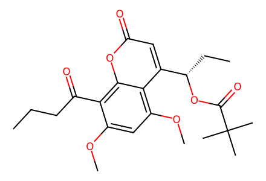
CCCC(=O)c1c(OC)cc(OC)c2c([C@H](CC)OC(=O)C(C)(C)C)cc(=O)oc12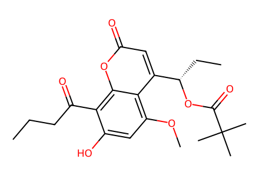
CCCC(=O)c1c(O)cc(OC)c2c([C@H](CC)OC(=O)C(C)(C)C)cc(=O)oc12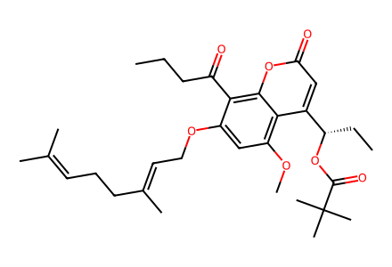
CCCC(=O)c1c(OC/C=C(\C)CCC=C(C)C)cc(OC)c2c([C@H](CC)OC(=O)C(C)(C)C)cc(=O)oc12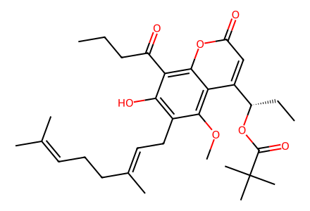
CCCC(=O)c1c(O)c(C/C=C(\C)CCC=C(C)C)c(OC)c2c([C@H](CC)OC(=O)C(C)(C)C)cc(=O)oc12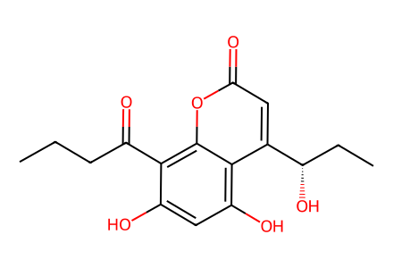
CCCC(=O)c1c(O)cc(O)c2c([C@@H](O)CC)cc(=O)oc12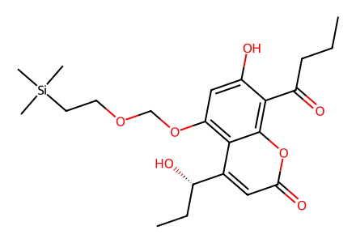
CCCC(=O)c1c(O)cc(OCOCC[Si](C)(C)C)c2c([C@@H](O)CC)cc(=O)oc12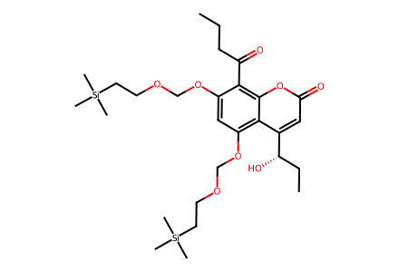
CCCC(=O)c1c(OCOCC[Si](C)(C)C)cc(OCOCC[Si](C)(C)C)c2c([C@@H](O)CC)cc(=O)oc12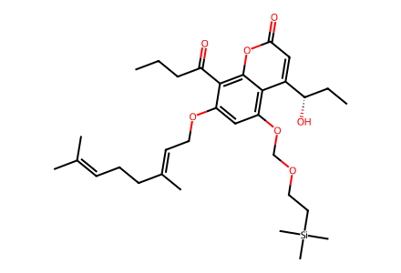
CCCC(=O)c1c(OC/C=C(\C)CCC=C(C)C)cc(OCOCC[Si](C)(C)C)c2c([C@@H](O)CC)cc(=O)oc12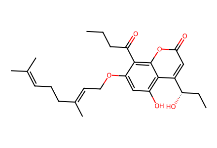
CCCC(=O)c1c(OC/C=C(\C)CCC=C(C)C)cc(O)c2c([C@@H](O)CC)cc(=O)oc12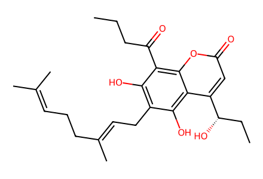
CCCC(=O)c1c(O)c(C/C=C(\C)CCC=C(C)C)c(O)c2c([C@@H](O)CC)cc(=O)oc12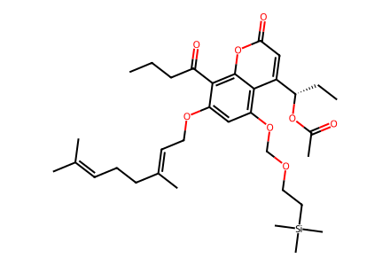
CCCC(=O)c1c(OC/C=C(\C)CCC=C(C)C)cc(OCOCC[Si](C)(C)C)c2c([C@H](CC)OC(C)=O)cc(=O)oc12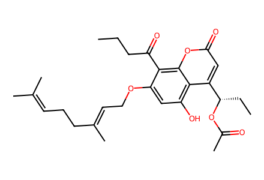
CCCC(=O)c1c(OC/C=C(\C)CCC=C(C)C)cc(O)c2c([C@H](CC)OC(C)=O)cc(=O)oc12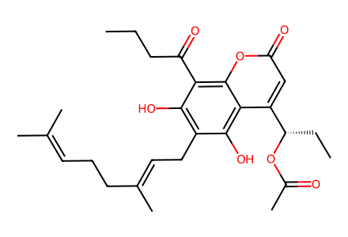
CCCC(=O)c1c(O)c(C/C=C(\C)CCC=C(C)C)c(O)c2c([C@H](CC)OC(C)=O)cc(=O)oc12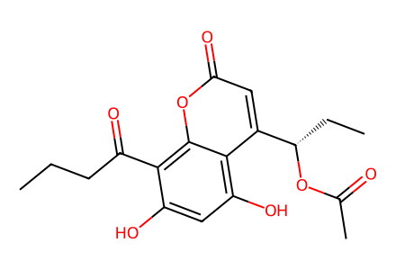
CCCC(=O)c1c(O)cc(O)c2c([C@H](CC)OC(C)=O)cc(=O)oc12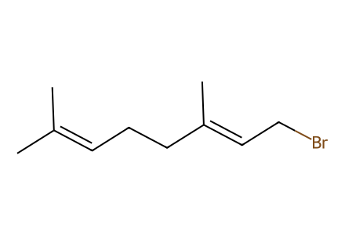
CC(C)=CCC/C(C)=C/CBr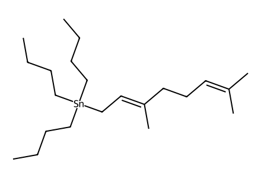
CCC[CH2][Sn]([CH2]/C=C(\C)CCC=C(C)C)([CH2]CCC)[CH2]CCC